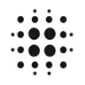

T
TeamifAIОфис и продуктивность
Для «TeamifAI» сначала определите свою задачу и требуемый результат. Карточка относится к направлению «Офис и продуктивность».
Раздел «Офис и продуктивность»: варианты ИИ для этой задачи, описания возможностей и переходы к обзорам. Сравните несколько решений на одинаковом примере.
По согласованным заметкам составьте черновик протокола с решениями и открытыми вопросами. Молекула помогает создавать документы по описанию; имена, даты и распределение обязанностей берите только из исходных материалов и подтвердите с участниками перед использованием.
Подготовь протокол рабочего обсуждения по этим заметкам. Нужны участники, решения и поручения. Не заполняй отсутствующие даты и ответственных; вынеси неизвестное в перечень вопросов перед согласованием документа.

Для «TeamifAI» сначала определите свою задачу и требуемый результат. Карточка относится к направлению «Офис и продуктивность».
Для «Templa8» сначала определите свою задачу и требуемый результат. Карточка относится к направлению «Офис и продуктивность».
Для «TextToFlowchart.com» сначала определите свою задачу и требуемый результат. Карточка относится к направлению «Офис и продуктивность».
Сравнивать «tryhogwarts.com» с другими инструментами раздела «Офис и продуктивность» удобнее на одинаковом исходном материале.
«Typed» представлен в разделе «Офис и продуктивность». При выборе проверьте нужную операцию и условия работы с результатом.
Для «TypeflowAI» сначала определите свою задачу и требуемый результат. Карточка относится к направлению «Офис и продуктивность».
Сравнивать «Typewise : AI Communication Assistant» с другими инструментами раздела «Офис и продуктивность» удобнее на одинаковом исходном материале.
Сравнивать «Udayah» с другими инструментами раздела «Офис и продуктивность» удобнее на одинаковом исходном материале.
Сравнивать «Ultra-Attention» с другими инструментами раздела «Офис и продуктивность» удобнее на одинаковом исходном материале.
«VoiceCalc» помогает выполнять вычисления с голосовым вводом.
Для «Voyp : Voice Over Your Phone» сначала определите свою задачу и требуемый результат. Карточка относится к направлению «Офис и продуктивность».
«We360.ai» представлен в разделе «Офис и продуктивность». При выборе проверьте нужную операцию и условия работы с результатом.

Wonderplan используют, чтобы подбирать маршрут и составлять план поездки. Ещё одно направление работы: готовить ответы на обращения клиентов.
Сравнивать «Zeda.io» с другими инструментами раздела «Офис и продуктивность» удобнее на одинаковом исходном материале.

10Web соединяет создание сайта на WordPress с его дальнейшим размещением и настройкой. Описание проекта используется для подготовки основы, которую затем нужно наполнить и проверить.
«AI Form Fill» помогает вносить сведения в поля формы.
Для «Aiden Solutions» сначала определите свою задачу и требуемый результат. Карточка относится к направлению «Офис и продуктивность».
«AiPPT» собирает материал для презентации.
Сравнивать «Ambient AI Assistant» с другими инструментами раздела «Офис и продуктивность» удобнее на одинаковом исходном материале.
«Assista» представлен в разделе «Офис и продуктивность». При выборе проверьте нужную операцию и условия работы с результатом.
«AutoFyl» помогает вносить сведения в поля формы.
«AutoSlide» собирает материал для презентации.
«Backpack» помогает подготовить маршрут поездки.
Для «Bange.io» сначала определите свою задачу и требуемый результат. Карточка относится к направлению «Офис и продуктивность».
Сравнивать «BoodleBox» с другими инструментами раздела «Офис и продуктивность» удобнее на одинаковом исходном материале.
«BuddyBrain» представлен в разделе «Офис и продуктивность». При выборе проверьте нужную операцию и условия работы с результатом.
Сравнивать «BuildnPlay» с другими инструментами раздела «Офис и продуктивность» удобнее на одинаковом исходном материале.
Сравнивать «Bulk Apply» с другими инструментами раздела «Офис и продуктивность» удобнее на одинаковом исходном материале.
«Canvid AI Screen Recorder» представлен в разделе «Офис и продуктивность». При выборе проверьте нужную операцию и условия работы с результатом.
Сравнивать «Career HQ» с другими инструментами раздела «Офис и продуктивность» удобнее на одинаковом исходном материале.
Для «checklist.gg» сначала определите свою задачу и требуемый результат. Карточка относится к направлению «Офис и продуктивность».
Сравнивать «Cherry Studio AI» с другими инструментами раздела «Офис и продуктивность» удобнее на одинаковом исходном материале.
«Cleft» представлен в разделе «Офис и продуктивность». При выборе проверьте нужную операцию и условия работы с результатом.
«Clipto» преобразует речевую запись в письменный материал.
Для «Clockwise: AI Powered Time Management Calendar» сначала определите свою задачу и требуемый результат. Карточка относится к направлению «Офис и продуктивность».
Для «Coconuts AI» сначала определите свою задачу и требуемый результат. Карточка относится к направлению «Офис и продуктивность».
Для «Context Link» сначала определите свою задачу и требуемый результат. Карточка относится к направлению «Офис и продуктивность».
Сравнивать «ConversAItions» с другими инструментами раздела «Офис и продуктивность» удобнее на одинаковом исходном материале.
«Core Team AI» представлен в разделе «Офис и продуктивность». При выборе проверьте нужную операцию и условия работы с результатом.
Сравнивать «coworking.live» с другими инструментами раздела «Офис и продуктивность» удобнее на одинаковом исходном материале.
Сравнивать «CypherScribe» с другими инструментами раздела «Офис и продуктивность» удобнее на одинаковом исходном материале.
«Dart : Project management on autopilot» помогает соединить повторяемые рабочие действия. «Dart : Project management on autopilot» помогает упорядочить задачи проекта.
«deckr» представлен в разделе «Офис и продуктивность». При выборе проверьте нужную операцию и условия работы с результатом.
«Dicte.ai» преобразует речевую запись в письменный материал.

DocXter рассчитан на задачи, где нужно разбирать содержимое документов. Ещё одно направление работы: исследовать тему и разбирать найденную информацию.
Для «Dola» сначала определите свою задачу и требуемый результат. Карточка относится к направлению «Офис и продуктивность».
Сравнивать «DraftLab» с другими инструментами раздела «Офис и продуктивность» удобнее на одинаковом исходном материале.
Для «Eagle Bot» сначала определите свою задачу и требуемый результат. Карточка относится к направлению «ИИ-ассистент».
Страница 19 из 35